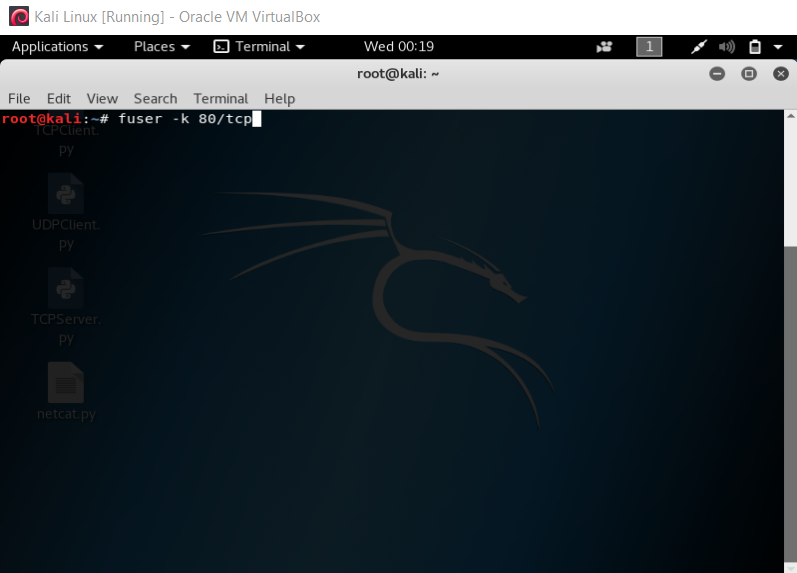

How to close open ports on Linux OS
Before we begin, we want to remind you to not get discouraged. This guide was specifically made to be accessible to a person of ANY experience level.
Step 1: To close an open port on a Linux machine, simply navigate to your machines command line.
Step 2: Once the command prompt opens, simply run the following command:
fuser -k <port>/tcp
Replace "port" with the port you would like to close. For example, if you would like to close port 80 (HTTP), you would run the following command:
fuser -k 80/tcp
